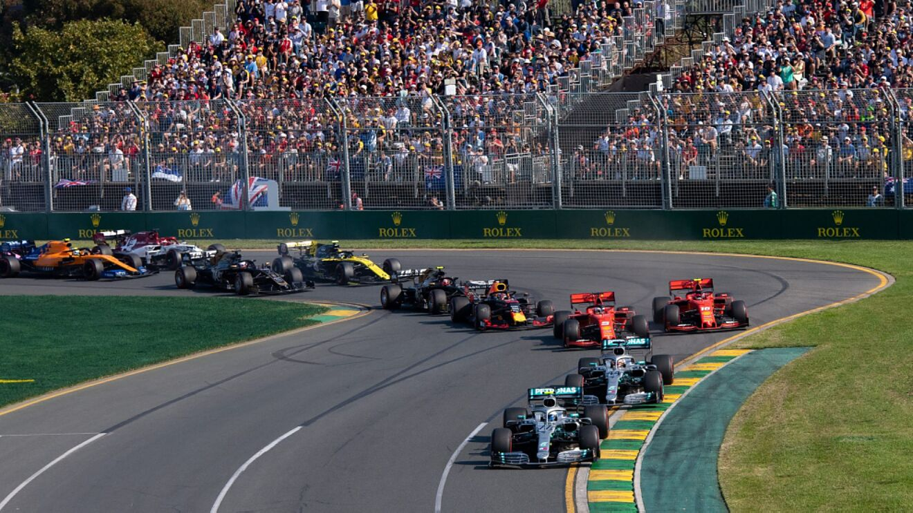
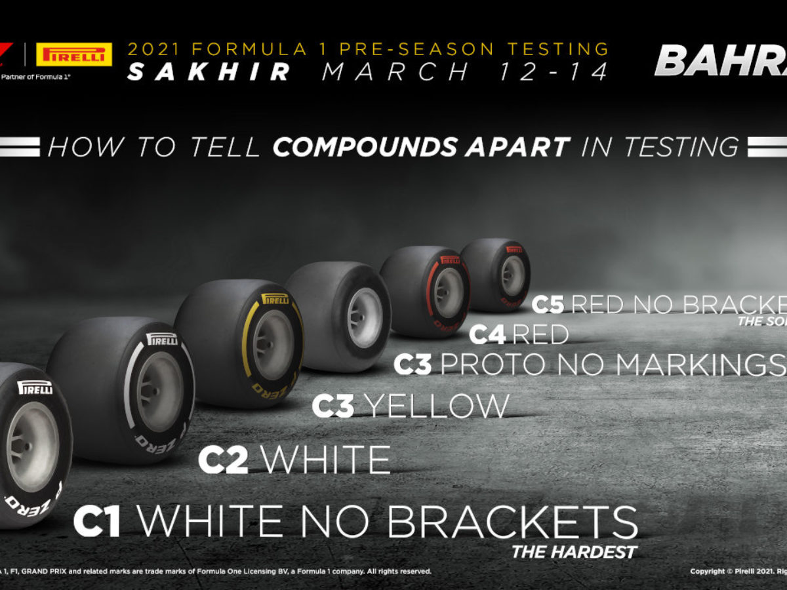
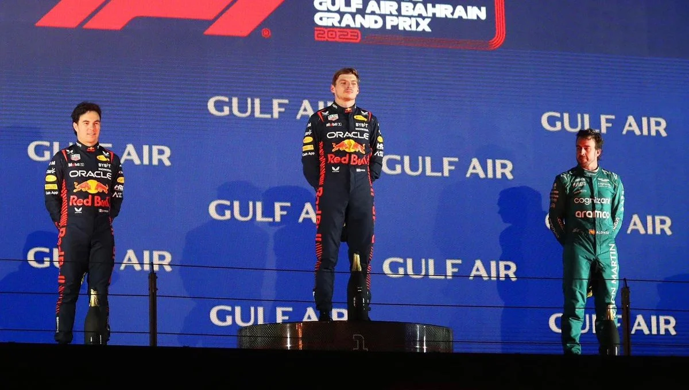
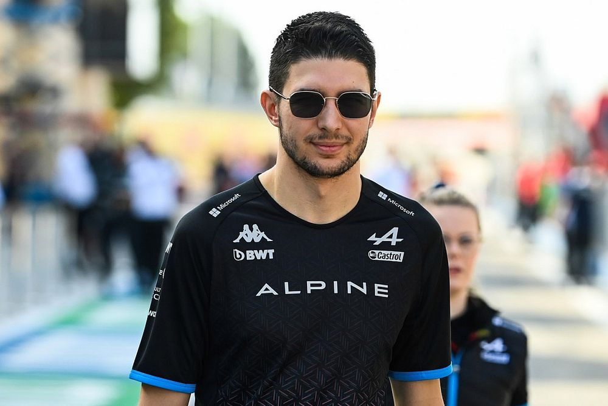

FIAren 1 Formulako Munduko Txapelketa, Formula 1, F1 edo Formula Bat bezala ezagunagoa, nazioarteko automobilismoko txapelketa nagusia eta motorreko kirolen munduko txapelketarik ezagunena eta ospetsuena da. Bera zuzentzen duen erakundea Automobilaren Nazioarteko Federazioa (FIA) da. 2016ko irailetik, Formula One Group erosi ondoren, Liberty Media enpresa estatubatuarra arduratzen da txapelketa kudeatzeaz eta jarduteaz.
Lasterketa bakoitzari Sari Nagusia esaten zaio, eta biltzen dituen txapelketa Formula 1eko Munduko Txapelketa da. Sari Nagusiak egiten diren lasterketa-zirkuitu gehienak autodromoak dira, nahiz eta kaleko zirkuituak ere erabiltzen diren eta aurretik ohiko zirkuituak erabili ziren. Era berean, erabilitako automobilak azken teknologia erabilgarria duten plaza bakarrekoak dira, betiere araudi tekniko batek mugatuta; Formula 1en garatu ziren hobekuntza batzuk azkenean automobil komertzialetan erabili ziren, hala nola disko-balaztak.
|  |  |
2023ko Australiako GP-a 4. DRS-ko zonalde bat izango du. |
Pirelli-k bere Bahreineko testetarako neumatikoak erakutsi ditu. |
|  |  |
2023a Red Bull-en 1-2 batekin eta Alonsoren podio batekin hasten da. |
"Dena gaizki atera zen" dio Esteban Oconek, 3 aldiz zigortuta eta erretiratuta izan ondoren. |